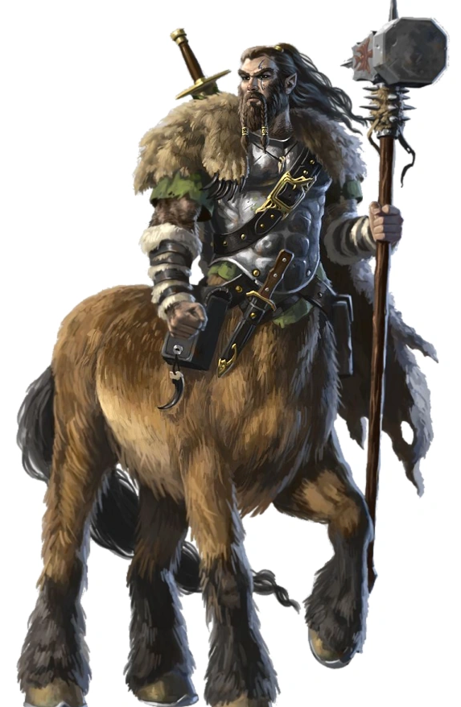

Playable Races > Centaur
A race of equine beastkin with humanlike torsos where the neck and head of a horse should be. They live nomadic lives of trekking across the savannas and plains of southern Karra, and are notorious for the bloody back and forth with the Minotaurs that has defined their civilization. They make excellent bowmen, rangers and fighters, and a few of each tribe serve as elemental speakers and spirit guides.
Plainsrunning: Centaurs may carry any other creature on their backs of size smaller than Trolls, Minotaur, Dragonkin or Ogres. With a rider, they may travel up to 60 miles plus twice their CON stat overall per day, of which they can alternate galloping one mile at 60 mph (totaling one minute) and leisurely trotting another at 8 mph.
Racials: +2 AGI +1 DEX -2 WIS. +4 Athletics.
Health: 1d8 health points per level.
Origin: Centaur live in tribes that dot the Wailing Steppes, erecting temporary camps and subsisting on a lifestyle of hunting and gathering.